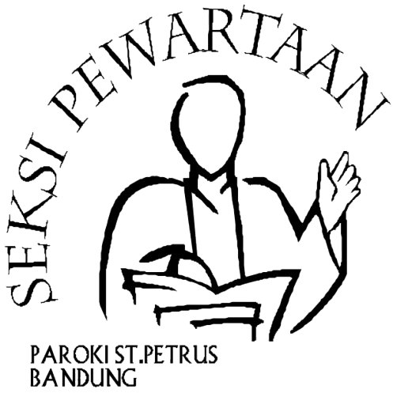

Subseksi Katekumen Dewasa
Paroki St. Petrus - Katedral
Keuskupan Bandung
Sistem Presensi
Katekumen Dewasa
Paroki St. Petrus - Bandung
Silakan pilih topik pertemuan hari ini sebelum memulai pemindaian QR katekumen.
Memuat Kamera...